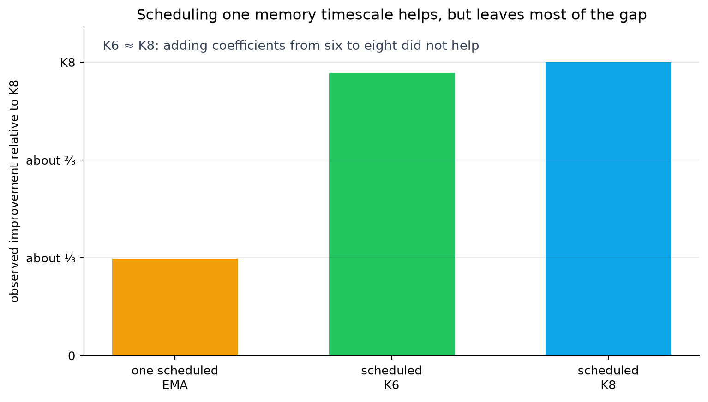
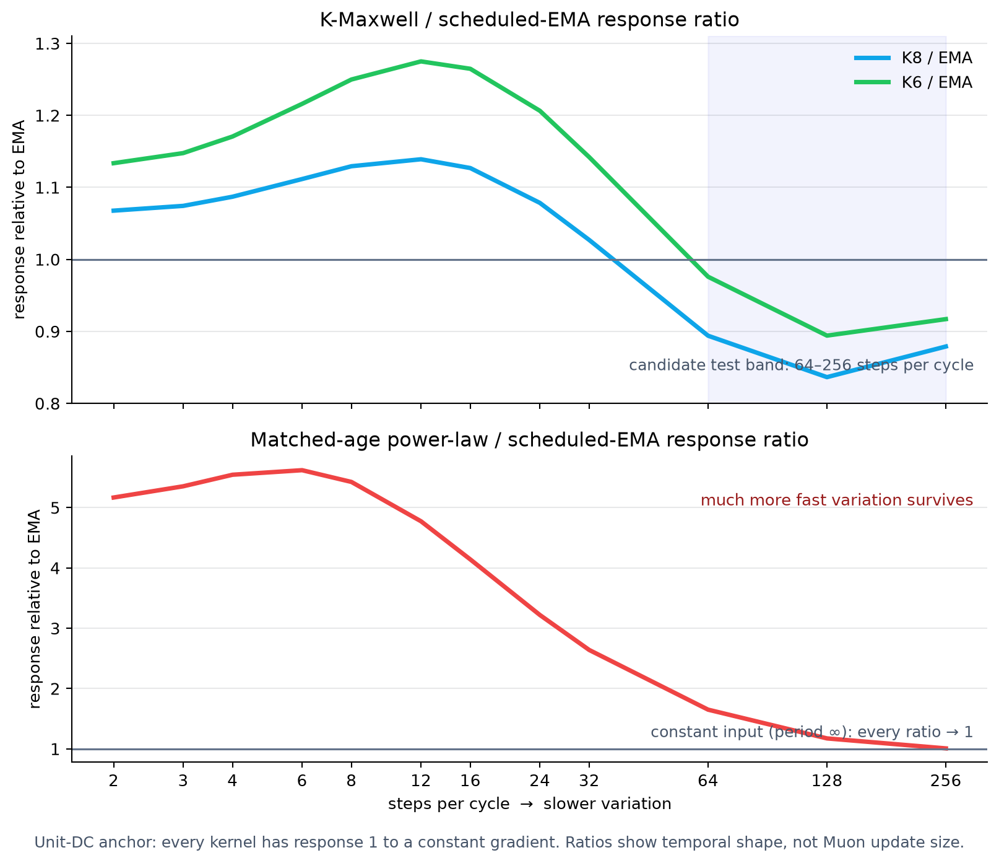

Toward a principled theory of momentum
Research memo · 29 August 2026
The goal is a momentum rule derived from what the optimizer is doing, rather than a decay schedule chosen by hand. The NanoGPT runs do not give us that rule yet. They do narrow the problem: changing one exponential memory over training helps, but several memory timescales still do better; increasing their number from six to eight does not.
1. What the experiments narrowed down
Momentum replaces the current gradient with a weighted history:
The list of weights by age is the momentum kernel. A single exponential moving average has {{inline:ema_kernel}}, so it has one memory timescale. Bi-Maxwell mixes two EMAs with different decay rates. K6 and K8 mix six and eight; their mixture weights change during training. A schedule changes the kernel over the training trajectory.

Three observations matter.
- Changing the memory timescale during training helps, but one scheduled EMA leaves a substantial gap in this run.
- K6 and K8 are nearly tied. The number of mixture coefficients alone does not explain the gain.
- A scheduled power law matched to the EMA's mean lag—the average age of the gradient samples it retains—performs worse than its control. Mean lag alone does not predict the outcome.
The comparisons still mix two effects: the endpoint kernel and the history that initialized the stored momentum. These possibilities require different controllers. If the endpoint kernel causes the gain, a small state-driven filter may be enough. If the initialization path causes it, the controller must retain information about the pre-switch momentum history.
2. What Muon removes—and what it leaves
Muon turns the filtered gradient matrix into an update direction while discarding its common size. For the ideal matrix-sign operation, multiplying the entire input by a positive number changes nothing:
The deployed finite-precision Newton–Schulz calculation is only approximately invariant, but the exact identity gives the right conceptual distinction.
A direct test of the deployed code returned identical outputs for power-of-two input scalings and about 1% relative differences for several non-power-of-two scalings on one random 768×768 matrix. The additive epsilon and BF16 rounding prevent a formal exact claim.
Common scale can disappear while momentum still matters. Suppose the history contains a slow matrix pattern A and a faster, differently oriented pattern B. After filtering, Muon receives
Multiplying both coefficients by the same positive number changes nothing. Changing their ratio, {{inline:ratio_modes}}, can change the dominant matrix directions, provided A and B are not already aligned. Muon can then choose a different update direction.
Working hypothesis. Momentum matters in Muon by changing the relative strength and phase of gradient patterns that vary on different timescales and point in different matrix directions. It does not act only by changing the size of a smoothed gradient.
3. How to read the filter comparison
Every kernel in the plot is anchored to response 1 for a constant gradient. The height of the power-law response is therefore not an arbitrary common multiplier. It means that much more fast variation survives relative to a constant or very slow gradient. Muon's scale invariance removes a multiplier on the whole matrix; it does not remove this frequency-dependent ratio when several patterns coexist.

K6 and K8 pass somewhat more short-to-intermediate variation than the EMA and less variation at periods of 64–256 steps. Weighting this difference by the frequency distribution of gradient energy estimated on the observed end-of-run trajectory places much of the K8–EMA discrepancy in that slower band. One trajectory identifies a band to test; it does not show that the band caused the loss difference.
The power law is a much larger mismatch. It passes several times more alternating-step variation—roughly 4–6×—and has roughly 6–9× the EMA's white-noise amplification, despite their matched mean lag. Its poor training result is consistent with that mismatch, but the comparison does not establish the cause. The comparison shows only what the filter passes.
4. What remains of the scalar edge-of-stability account
The edge of stability is the boundary where a small disturbance stops decaying and begins to grow. The classical calculation is still useful as a reference. Consider one quadratic direction with curvature λ and the update xt+1 = axt − ηzt, where a is the decay multiplier and η is the learning rate. Define {{inline:W_def}}, with q standing for a one-step delay. Try a disturbance that changes by a factor r each step. A value delayed by k steps carries a factor r−k, which gives
An alternating disturbance has r = −1, so {{inline:W_flip}} appears in momentum edge-of-stability formulas such as Andreyev et al.'s. The full substitution is in the appendix.
That scalar equation is not sufficient for Muon. Muon filters a matrix and then normalizes it nonlinearly, so its local response depends on matrix directions, stored momentum, and curvature together. Because the trainer applies Adam to embeddings and the language-model head, a full local analysis must also include those states and their coupling to Muon layers.
Two preregistered screens challenged the simple scalar account.
- Removing momentum increased {{inline:W_flip}} by about 11×. A scalar boundary predicts roughly 11× lower equilibrium sharpness; the measured sharpness was instead about 3× higher.
- Changing the learning rate by 3.4× changed period-two amplitude by 16–19×, an exponent near 2.4 rather than the preregistered near-linear range. After dividing amplitude by learning rate and curvature, the no-momentum run stayed within about 1.5× of the control in three of four windows despite its 11× change in {{inline:W_flip}}.
The runs follow different trajectories, and the no-momentum run's weight norms are only about 0.31× the reference. The screens therefore weaken {{inline:eta_lambda_flip}} as a standalone Muon control variable; they do not identify its replacement.
The scale identity suggests a replacement hypothesis. Gain cancels when one matrix pattern dominates. It can matter again when differently oriented patterns compete, because the kernel changes their relative mixture. Finite Newton–Schulz makes this selection graded rather than winner-take-all. This is still a hypothesis: every result above compares different trajectories, and none tests the mechanism from the same state.
5. The next same-state question
Question. Does the unresolved part of K-Maxwell's temporal response change which matrix directions Muon selects when model and optimizer state are held fixed?
Start four branches from one checkpoint: two identical controls and two intervention filters. Copy all model and optimizer state, including Adam state, and keep data order and hyperparameters fixed. Before the fork, warm one common bank of EMA buffers; after the fork, realize each intervention as a different linear combination of that same bank. Thus every branch begins with the same stored gradient history.
Use duplicate controls to measure ordinary run divergence. Before launch, solve for two filters that match their constant-input response, mean lag, alternating-step response, and white-noise amplification at the fork. Mean lag is {{inline:mean_age}}; white-noise amplification is {{inline:noise_gain}}. Make the filters differ as much as possible in the 64–256-step band. Register the allowed mismatch, the immediate measurement window, the maximum descriptor drift, and the threshold set by the duplicate controls. If no pair meets those tolerances, do not run the experiment.
To measure competition, decompose the gradient history into temporal bands. Compute the leading left and right singular vectors of the total matrix just before Muon's normalization. Project each band's matrix contribution onto those vectors; its squared projected Frobenius norm, divided by the sum across bands, is that band's subspace share.
- An unaltered band's subspace share moves immediately. Beyond duplicate-control divergence, this supports competition between temporal patterns under the intervention.
- Only the altered band moves immediately. Selective temporal filtering matters, but cross-band competition has not been shown.
- Only later loss or sharpness separates. The local matrix-direction mechanism has not been identified; test slower trajectory state.
- Nothing separates. Do not promote the 64–256-step explanation at this checkpoint; test momentum-state history or richer matrix structure next.
This experiment distinguishes a local filter-shape effect from a trajectory or initialization effect.
This is a proposed experiment; no intervention has been run.
6. What a principled rule would look like
If the same-state test supports a local mechanism, the next task is to find the fewest running summaries of past gradients that reproduce it. Each independent summary is one memory state. Fewer states are desirable because they make the rule interpretable and reduce tuning, not because fewer is inherently better.
The setting should come from measured optimizer state rather than training step. The practical research question is:
If the intervention succeeds, can one measured optimizer state choose the filter setting without a hand-written schedule?
The analysis should treat the model, gradient history, momentum memory, Muon normalization, and Adam blocks as one evolving system. The controller itself should use the smallest measurable proxy that predicts the desired response. The immediate roadmap is:
- test whether relative temporal filtering changes Muon's selected matrix directions from the same state;
- find a measurable state that predicts the desired response;
- implement that response with the fewest memory states whose bounded inputs and small local perturbations remain bounded;
- only then evaluate the resulting rule across seeds, scales, and tasks.
Appendices
A. Exact discovery measurements and controls
| momentum rule | hardware | validation loss | gain over matched control |
|---|---|---|---|
| bi-Maxwell control | 2×H100 SXM | 3.27547 | — |
| scheduled one-EMA | 2×H100 SXM | 3.27449 | +0.00098 |
| scheduled K6 | 2×H100 SXM | 3.27261 | +0.00286 |
| scheduled K8 | 2×H100 SXM | 3.27250 | +0.00297 |
| matched-age scheduled power law | 8×A100 | 3.29123 | −0.01287 |
Each row is a single-seed discovery measurement. The power law uses its separate matched A100 control. The same one-EMA configuration gained +0.00068 on its A100 control, so the one-third figure is stack-sensitive.
B. Full scalar characteristic-equation derivation
Let
Try a mode xt = rt. A lag of k steps gives
Therefore the filtered gradient is
Substitute this into the update, divide by xt, and move every term to the left to obtain {{inline:linear_characteristic}}. This result is exact for the deterministic scalar model. It is not a Muon stability theorem.
C. Where the local expected-loss approximation comes from
For a proposed update {{inline:delta_x}}, second-order Taylor expansion around the current parameters gives
The first term rewards alignment with the true gradient. The second is the curvature cost of the chosen direction. Taking an expectation conditional on the current model and optimizer state gives the expected local change.
This requires a smooth local loss and a controlled remainder. A filtered stochastic update is correlated with gradient noise, so a minibatch gradient cannot silently replace the true gradient. Weight decay adds first-order, cross, and quadratic terms. The expression is a possible diagnostic, not a derived optimizer.
D. Evidence limits and implementation details
- The transfer curves are endpoint filter descriptors. They are not the exact accumulated kernel of a time-varying schedule or the realized Muon update.
- The 64–256-step localization uses an end-of-run, trajectory-specific spectrum. An early-training estimate became invalid beyond short periods and is not used here.
- Exact matrix sign is invariant to positive common scaling. The deployed implementation uses an additive epsilon and BF16 arithmetic, so exact homogeneity is not guaranteed.
- Unit response to a constant input fixes the otherwise arbitrary overall kernel scale. For nonnegative weights it is also the maximum response by the triangle inequality. The finite power-law approximation has a tiny negative tail (about 1.4×10−5 at one late lag), too small to affect the plotted ratios.
- The momentum-free and step-size screens compare different trajectories and weight norms. They challenge scalar accounts but identify no replacement.